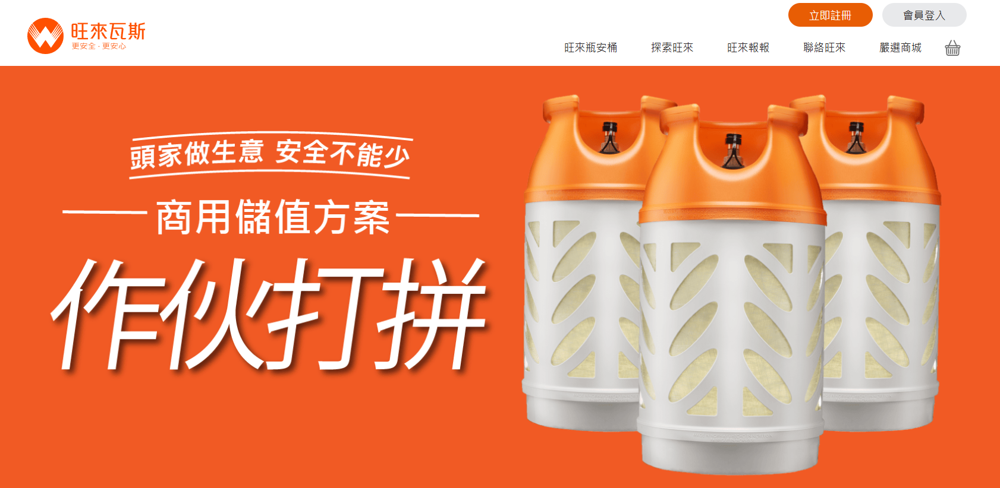

SEO 策略
管理多品牌 SEO 專案，兼顧內容、技術 SEO 與長期排名表現。
熟悉多品牌、多語系與長期維運節奏。
I'm
跨界行銷的資訊產品經理
精準行銷，不浪費預算找到目標客群是我的核心能力。
穩定增長是我追求的目標，方法有很多: 優化架構、廣告、自媒體拍攝、渠道拓展、打造產品賣點、行銷分析、競品調查等等。
SEO 專案管理合交付經驗
4人小團隊歷史最高單月行銷業績
2019~ 2021單月打造平均自媒體流量
自然流量成長，平均績效
以自然流量、內容系統、CRM 漏斗與 AI workflow 為主軸。
管理多品牌 SEO 專案，兼顧內容、技術 SEO 與長期排名表現。
熟悉多品牌、多語系與長期維運節奏。
將 AI 短影音與內容製作流程標準化，提升產能與一致性。
能把內容工作拆成流程與責任分工，而非一次性產出。
整合 Zoho CRM 與 lead 流程，強化詢盤品質、追蹤與決策效率。
將 SEO 流量與後端銷售流程串起來看。
不只關注流量，也關注 landing flow、signup / onboarding 與用戶旅程的轉化阻力。
可把成長問題與產品流程問題一起處理。
以 SEO、內容營運、行銷整合相關案例為主。

。橫跨電商、金融、工具機等等，且有上市櫃公司網站執行經驗

15年網站流量成長3倍。

橫跨工具機、食品、零售、金融等多產業的網站建設與SEO優化

獲得台中各區流量，用戶數增長60%，自然流量提升300%
優先呈現與 SEO、內容營運、漏斗管理與成長優化最相關的經歷。
職位：SEO 專案經理
職位：行銷經理
職位：前端 / 產品 / 營運角色
用成長 PM 關鍵字呈現，並對應到實際營運系統與漏斗工作。
對應多品牌 SEO 專案、多語系內容規劃與 AI 輔助內容流程。
實際用於詢盤追蹤、lead 狀態管理與 B2B / 受監管產品場景的轉化分析。
用於整合技術 SEO、內容、CRM 與利害關係人需求，形成可複製的營運節奏。
將排名、漏斗與用戶旅程訊號串起來，找出轉化阻力並持續優化。
歡迎交流 SEO PM、Growth PM、CRM funnel 與內容營運相關機會。